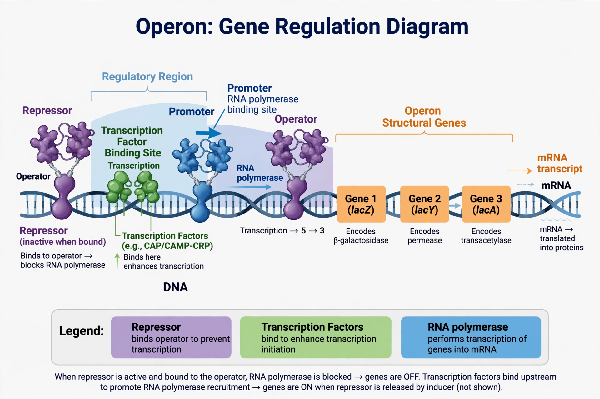

| Regulation of gene expression | |
|---|---|
| Stages controlled | Transcription; RNA processing; mRNA stability & translation; post-translational modification |
| Key elements | Promoters, enhancers, silencers, transcription factors, operons |
| Foundational work | Jacob & Monod, lac operon (1961) |
| Related field | Epigenetics |

Regulation of gene expression, or gene regulation, includes any mechanism used by a cell to increase or decrease the production of specific gene products (proteins or functional RNAs). It is what allows cells with identical genomes to differentiate into specialised types — a neuron and a liver cell differ not in their DNA but in which genes they express — and allows organisms to respond to their environment.
The most important control point is the initiation of transcription. Transcription factors bind to promoters and to distant enhancers or silencers, recruiting or blocking RNA polymerase. In bacteria, genes are often organised into operons; the classic lac operon of E. coli, worked out by François Jacob and Jacques Monod in 1961, is switched off by a repressor and switched on when lactose is present. In eukaryotes, access to DNA is also controlled by chromatin structure: DNA methylation and histone modifications can stably silence regions, as in gene silencing and X-chromosome inactivation.
After transcription, expression is tuned by alternative splicing, mRNA export and localisation, mRNA stability, and small RNAs — microRNAs and siRNAs can repress translation or trigger mRNA destruction. Translation itself is regulated by initiation factors and upstream open reading frames, and the final output is further controlled by post-translational modification and targeted protein degradation via the proteasome.
Gene regulation underlies development, cell differentiation, circadian rhythms, immune responses and adaptation to diet and stress. Its breakdown contributes to cancer and many genetic diseases; master regulators such as the Hox transcription factors pattern the body plan of animals from flies to humans.